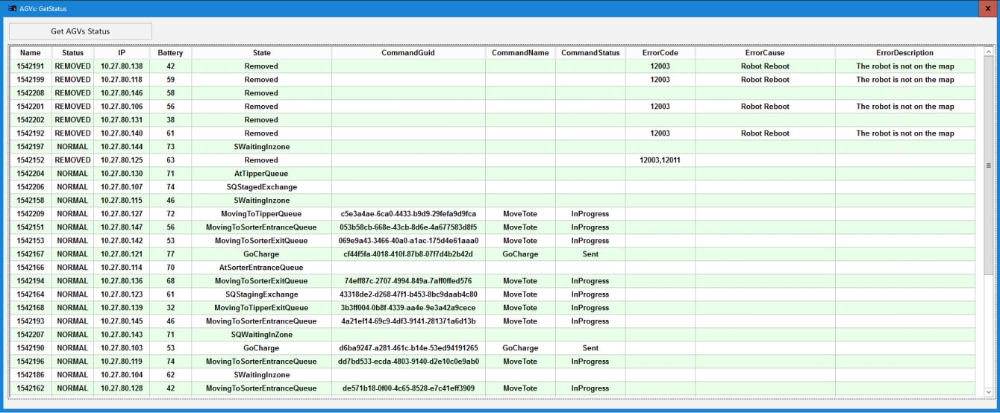

| Procedure ID | proc_use_agv_api_controls_remove_recover_pause_resume_v1 |
|---|---|
| Title | Use AGV API Controls to Remove/Recover an AGV and Pause/Resume All AGVs |
| Procedure Type | operation |
| Primary Role | operator |
| Support Safe | Yes |
| Capability Tags | agv_physical_recovery, agv_active_errors |
| Access Surface | tipper_hmi |
| Audience Roles | operator |
| Failure Pattern Tags | None |
| Validation Status | needs_sme_review |
| Merge Status | source_finalized |
Use the System HMI API screen’s AGVs section to remove a problematic AGV by ID, recover (add back) the AGV by ID after physical recovery, and pause/resume all AGV movement fleet-wide.
When an AGV needs to be removed from the system (e.g., it has an issue) and later recovered after physical removal/recovery, and you need to pause/resume all AGV movement using the AGV API Controls.


Responsible role: operator
Instruction:
Open the System HMI API screen and navigate to the AGVs section (AGV API Controls).
Expected result:
The AGVs section is visible with controls including Remove AGV, Recover AGV, Pause All AGVs, and Resume All AGVs.
Responsible role: operator
Instruction:
In the AGVs section, enter the target AGV ID in the Remove AGV input field, then click the Remove AGV control/button.
Expected result:
The Remove AGV action is accepted for the entered AGV ID, and the AGV is removed from the system after the required physical removal step.
Stop or Escalate If:
Responsible role: operator
Instruction:
After the physical recovery/add-back step, enter the same (or correct) AGV ID in the Recover AGV input field, then click the Recover AGV control/button.
Expected result:
The Recover AGV action is accepted for the entered AGV ID, and the AGV is added back into the system after physical recovery.
Responsible role: operator
Instruction:
Click Pause All AGVs in the AGVs section of the API screen.
Expected result:
Fleet-wide AGV movement is paused after clicking Pause All AGVs.
Stop or Escalate If:
Responsible role: operator
Instruction:
Click Resume All AGVs in the AGVs section of the API screen.
Expected result:
Fleet-wide AGV movement resumes after clicking Resume All AGVs.